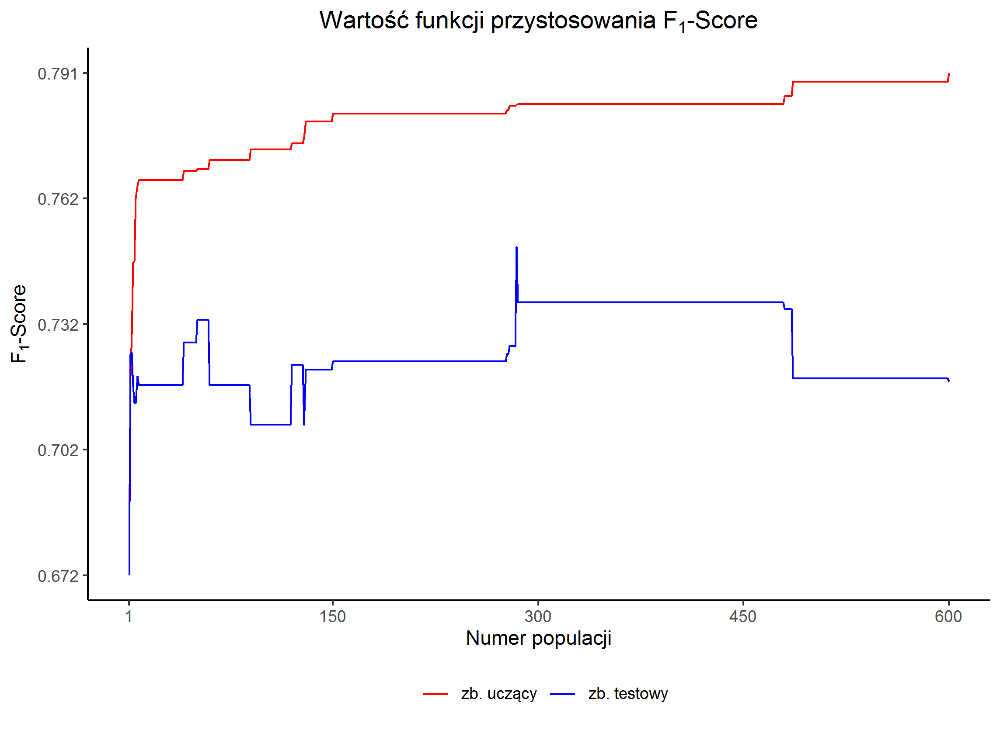
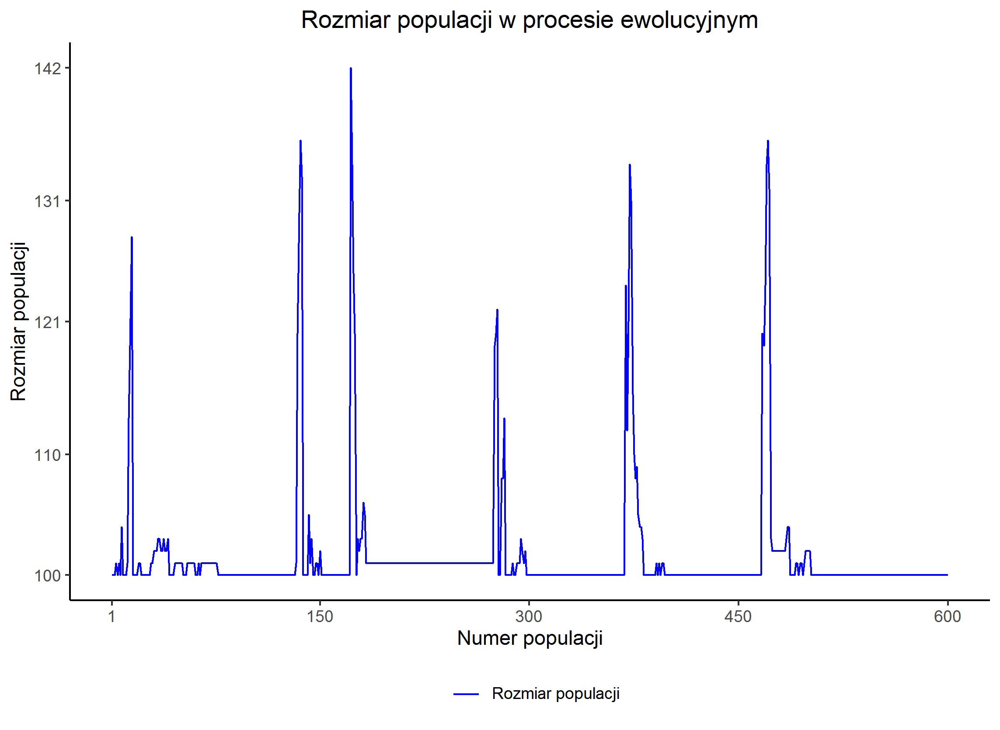
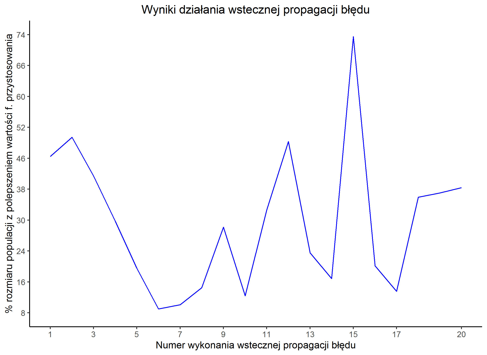
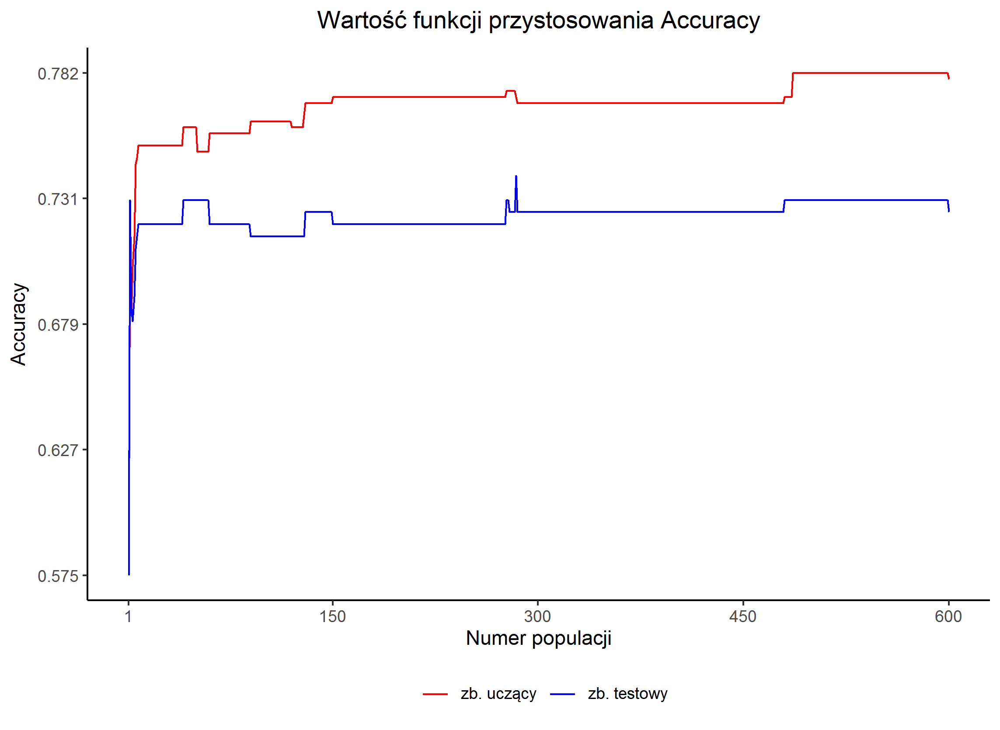
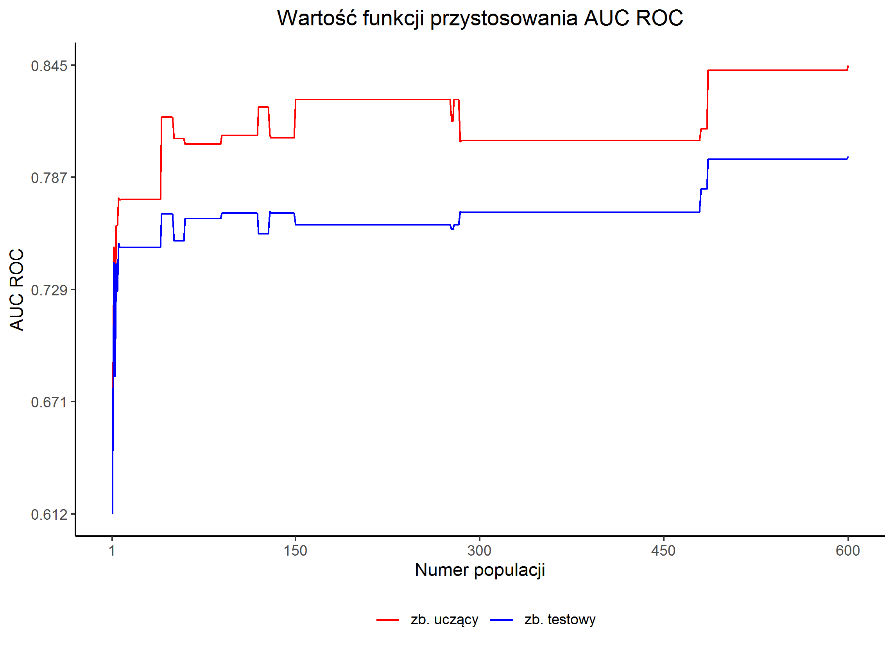
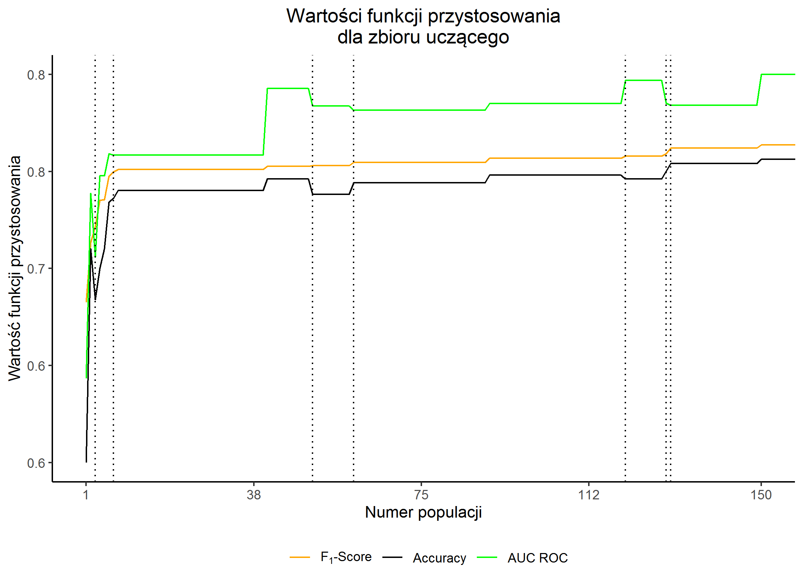

Eksperyment nr 2
„German Credit Data”
Konfiguracja i wyniki eksperymentu
| Konfiguracja | konfiguracja | ||||||||||||
|---|---|---|---|---|---|---|---|---|---|---|---|---|---|
| Rozdział z rozprawy | 5.2 Maksymalizacja metryki F1-score | ||||||||||||
| Zbiór danych | „German Credit Data” | ||||||||||||
| liczba obserwacji | zbiór uczący: 400 zbiór testowy: 200 | ||||||||||||
| Liczba epok | 700 | ||||||||||||
| Kryterium | F1-Score | ||||||||||||
| Ziarno generatora liczb losowych | skrypt przygotowujący dane: 2357 eksperyment: 3771 | ||||||||||||
| Wybrana kompromisowa sieć neuronowa | |||||||||||||
| Epoka uzyskania osobnika | 611 | ||||||||||||
| Wizualizacja / opis osobnika | wizualizacja genomu | ||||||||||||
| Oceny | Na zbiorze uczącym
Na zbiorze testowym
|
Rysunki





